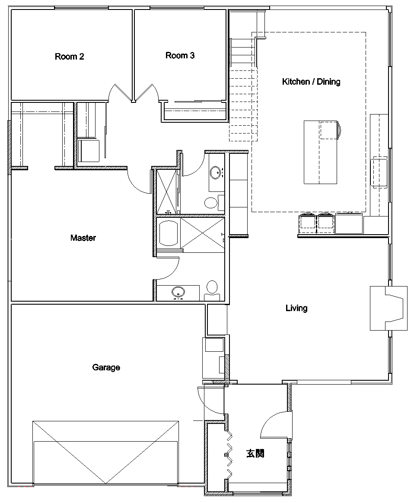

The 6 room house is converted to a 5 room with a lot of cool (in my opinion) features.
These are my original ideas with all the features I was hoping to have.

An example of a stove right next to a window, but now that I think about it, it won't work well with the windows I have. Let's swap and put the sink back in front of the window.
The soaking tub. Kohler K-1490-X 48"

Example of bathroom that has been divided with a separate shower/bath section.